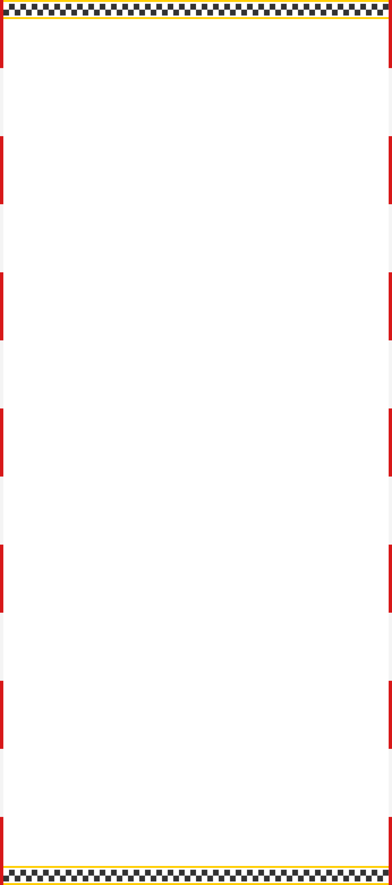

home > 스피디움 소개 > 코스맵
코스맵
“Concerns of a Racer, Dynamic Racing”
START

모든 레이서들의 꿈을 담은 3.908km
스피드를 즐기는 최고의 방법에 대한 고민이 탄생시킨 인제스피디움 서킷은 선수와 관객 모두에게 만족을 드립니다.
속도와 모험을 사랑하는 모든 레이서들의 꿈, 국제대회가 개최되는 3.908km 서킷에서 일반인도 안전하게 레이싱을 즐길 수 있습니다.
Full 코스: 완벽한 레이싱의 정수
모든 구간을 아우르는 풀 코스는 스피드와 기술의 진수를 느낄 수 있는 최고의 서킷입니다. 다양한 직선과 코너가 이어져, 드라이버의 한계를 시험하며 완벽한 레이싱 경험을 제공합니다.
A 코스: 스릴 넘치는 챌린지
고속 직선과 날카로운 코너가 절묘하게 배치된 A 코스는 드라이버의 집중력과 테크닉을 극대화시키는 도전적인 서킷입니다. 특히 중반부의 타이트한 섹션은 정확한 조향과 브레이킹이 요구됩니다.
B 코스: 유려한 속도의 미학
짧고 간결한 레이아웃으로 구성된 B 코스는 초보자부터 숙련된 드라이버까지 부담 없이 즐길 수 있는 코스입니다. 부드러운 곡선과 직선 구간이 조화를 이뤄 스피드와 안정감을 동시에 제공합니다.